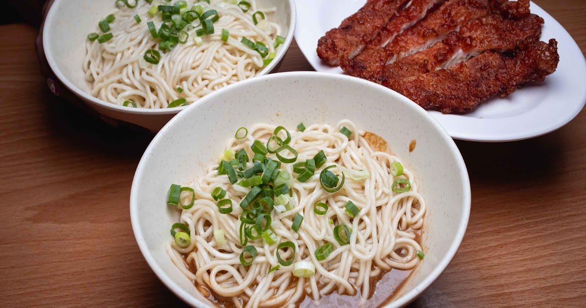

台北中正美食｜南門福州傻瓜乾麵：南昌路巷弄裡的辣渣乾拌麵與紅糟排骨

一句話摘要
這是一間靠近中正紀念堂站的老派乾拌麵店：一碗福州乾麵先從清爽麵條開始，再由辣渣、酸菜、烏醋與紅油自行調出個人口味；若想加強滿足感，原作者首推炸紅糟排骨。
來源脈絡
來源為「台南找美食」於 2026 年 5 月 26 日發布的到訪食記。原始分享網址的副檔名為 `.htm`，目前頁面可讀的正式網址為 `.html`，兩者一併保留作為來源追溯。
原文將店家定位為南門市場周邊的平價麵食選擇，並描述店內為傳統小吃店空間、有空調與紙巾。文中所述店史與福州麵源流屬作者整理，未另附一手史料，本文不將其視為獨立可驗證的歷史結論。
店家資訊
| 項目 | 資訊 |
|---|---|
| 店名 | 南門福州傻瓜乾麵 |
| 地址 | 臺北市中正區南昌路一段 59 巷 32 號 |
| 電話 | 02-2394-8108 |
| 原文記載營業時間 | 11:00–20:30 |
| 交通 | 捷運中正紀念堂站 2 號出口步行約 2 分鐘；中正紀念堂羅斯福公車站步行約 3 分鐘 |
| 附近地標 | 南門市場、南昌公園、臺北市立聯合醫院婦幼院區、中央銀行、建國中學 |
提醒：營業時間、公休日、電話、地址與售價都可能變動，出發前請以店家現場或最新公告為準。
怎麼點：先從乾麵與紅糟排骨開始
| 品項 | 原文記錄／推薦重點 |
|---|---|
| 傻瓜乾麵 | 菜單照片標示 30 元；細圓麵條帶 Q 度，上桌以蔥花為主，適合自行調味。 |
| 麻醬麵 | 小 35 元、大 50 元；原作者認為芝麻醬香氣明顯，搭辣渣能增加焦香與顆粒口感。 |
| 炸紅糟排骨 | 單塊 45 元；原作者明確列為首推，形容外酥、肉厚且不乾柴。 |
| 炸紅糟排骨乾麵 | 小 70 元、大 80 元；想一次吃麵與排骨，可從此組合切入。 |
| 福州魚丸湯 | 40 元；可搭配排骨乾麵組合，實際組合與價格請看現場菜單。 |
| 燙青菜 | 30 元；適合作為麵食搭配。 |
原文菜單還列出炸醬拌麵、滷肉飯、炸香蒜排骨、筍絲、青菜蛋花湯、福州魚丸蛋包湯與蔬菜蛋包湯等選項。價格屬食記拍攝當時資訊，不宜當成即時菜單。
靈魂吃法：自助調味區
原文特別提到自製辣渣、酸菜、烏醋、白醋、胡椒粉與紅油。建議第一次不要一次加太多：
- 先吃一口原味，感受麵條與基底味道。
- 再少量加入辣渣與烏醋，依酸、辣偏好調整。
- 喜歡脆口與鹹香層次的人，可再加酸菜。
原作者將帶顆粒感的辣渣視為整碗麵的關鍵；這是個人口味描述，不代表所有人都適合重辣。
適合情境
- 在中正紀念堂、南門市場一帶找快速午餐或晚餐。
- 想吃可自行調整酸辣比例的台式乾拌麵。
- 兩人以上想分食排骨、小菜與湯品，做成完整小吃組合。
實用提醒
- 原文稱店家為熱門小吃，尖峰時段可能需要等候；實際狀況依現場為準。
- 辣渣、醋與酸菜的加入量會大幅改變風味，建議循序加料。
- 文中提及的歷史、店齡與「正宗」說法僅保留為食記敘事；若作為研究或正式介紹，仍應向店家或一手史料另行查證。
原始連結
- 原始分享網址：https://tainanfoodeat.blogspot.com/2026/05/noodles-nanmen-fuzhoufools.htm
- 正式食記網址：https://tainanfoodeat.blogspot.com/2026/05/noodles-nanmen-fuzhoufools.html
- Google Maps 搜尋：https://www.google.com/maps/search/?api=1&query=%E5%8D%97%E9%96%80%E7%A6%8F%E5%B7%9E%E5%82%BB%E7%93%9C%E4%B9%BE%E9%BA%B5%20%E8%87%BA%E5%8C%97%E5%B8%82%E4%B8%AD%E6%AD%A3%E5%8D%80%E5%8D%97%E6%98%8C%E8%B7%AF%E4%B8%80%E6%AE%B559%E5%B7%B732%E8%99%9F